Basic modeling tutorial/cs
| Tutorial |
| Topic |
|---|
| Introduction to modelling |
| Level |
| Beginner |
| Time to complete |
| 15 minutes |
| Authors |
| FreeCAD version |
| Example files |
| See also |
| None |
Introduction
Tento Výukový program základního modelování Vám ukáže jak vymodelovat ocelový úhelník. Měli byste vědět že FreeCAD je modulární při konstruování a jako mnoho jiných CAD programů má vždy více než jednu možnost jak věci dělat. Zde si projdeme dvě metody.
This tutorial was written with version 0.15 of FreeCAD.
Úvod do modelovacích technik
První (a základní) technika modelování těles je Constructive Solid Geometry (CSG). Pracujete se základními tvary jako jsou kostky, válce, koule a kužely a konstruujete z nich požadované tvary jejich kombinací, odečítáním jednoho tvaru od druhého nebo jejich protínáním. Tyto nástroje jsou součástí Pracovní plochy Díl. Můžete také uplatnit transformace tvarů, jako jsou zaoblení nebo úkosy hran. Tyto nástroje jsou také v Pracovní ploše Díl.
Potom jsou zde také další pokročilé nástroje. Začnete kreslením 2D profilů, které potom vysunete nebo obtočíte.
Takže začněme tak, že si vyzkoušíme udělat nějaké železné nohy ke stolu pomocí těchto dvou metod.
1.metoda - Konstrukční geometrie těles
- Začněte na pracovní ploše Díl (menu Pohled > Pracovní plocha > Díl)
- Klikněte na tlačítko Box pro vytvoření boxu (kostky)
- Změnte jho rozměry tak, že jej vyberete buď ve 3D prostoru nebo kliknutím na něj v záložce Projektu vlevo, potom
- klikněte na záložku Data dole v okně Projektu a změňte hodnoty výšky, délky a šířky na 750mm, 50 a 50 (viz. Obr. 1.1)
- Stejným způsobem vytvořte druhý box, ale s hodnotami 750, 40 a 40mm. Ve výchozím postavení bude tento box překrývat ten první. (viz. Obr. 1.2)
- Teď odečtete druhý box od prvního. Vyberte ten první (nazvaný Box), potom druhý (nazvaný Box001), pozor, pořadí výběru je důležitét! (ujistěte se, že oba tvary jsou vybrány v okně stromu projektu. Pamatujte si jednu věc: v navigačním módu Invertor - Vynálezce, nefunguje kombinace Ctrl + klik pro vícenásobný výběr. Switch to either CAD or Blender selection.)
- On the Part Workbench toolbar, click on the Cut tool.


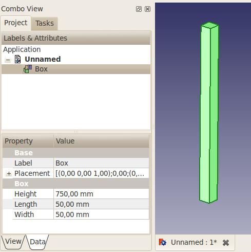

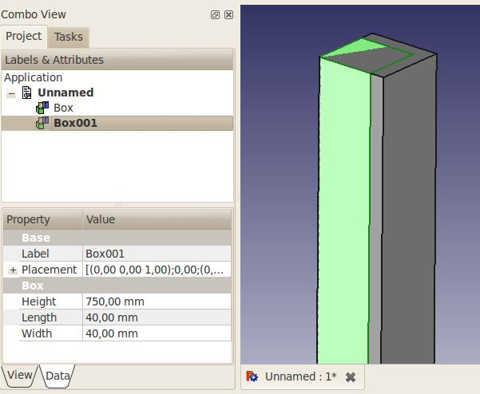

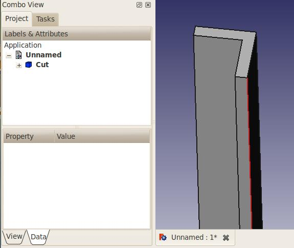
Nyní máte Váš první železný úhelník (Obr. 1.3). všimněte si, že v okně stromu projektu vlevo byly oba boxy přepsány objektem "Cut". Ve skutečnosti nezmizely, ale jsou seskupeny pod objektem Cut. Klikněte na + před nimi a uvidíte, že oba boxy jsou stále zde, ale zbarveny šedě (Obr. 1.4). Když kliknete na některý z nich a stisknete klávesu mezerník, tak se ukáže. Mezerník přepíná viditelnost vybraných objektů. (Obr. 1.5)
Nechcete úhelník orientovaný takto? Potřebujete pouze změnit umístění boxu Box001. Vyberte jej, mezerníkem zviditelněte a v záložce Data klikněte na + před Umístěním a potom rozbalte parametr Pozice a změňte jeho souřadnice X a Y. Stiskněte ENTER, opět skryjte Box001 a orientace Vašeho úhelníku je nyní jiná. (Obr. 1.5) Můžete změnit i rozměry tvaru a objekt Cut bude aktualizován.

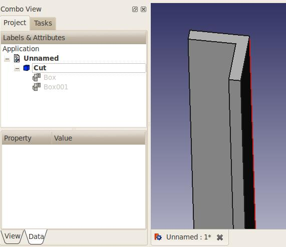

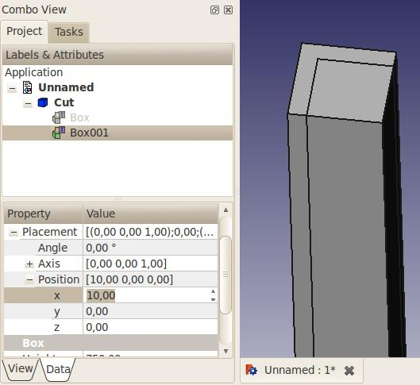
Mimochodem, můžeme přidat zaoblení, tak bude úhelník více realistický. Použijeme nástroj Zaoblení. (Obr. 1.6)


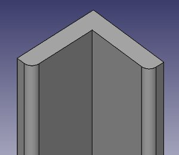
2.metoda - Vysunutí profilu
Tato metoda vyžaduje začít kreslení 2D profilu. Musíte aktivovat pracovní plocha 2D Kreslení (menu Pohled > Pracovní plocha > 2D Kreslení).
Dále potřebujeme nastavit pracovní rovinu. Podle verze FreeCADu máte přímo pod nástrojovým pruhem vpravo tlačítko "None". Klikněte na ně a vlevo se objeví hned za "aktivní příkaz": Vyberte rovinu Odstup, potom textové pole a několik dalších tlačítek. Předpokládejme, že chcete začít profil v půdorysu, stiskněte XY. Tlačítko "None" nyní bude ukazovat "Top" jako aktivní rovinu. Podívejte se na poznámku.
Vyberte nástroj Drát (lomená čára), potom začněte kreslit tvar použitím textových polí pro pozice X a Y. Mělo by být zakliknuto políčko "Relativně" i políčko "Vyplněno".

- 1. bod: 0,0
- 2. bod: 50,0
- 3. bod: 0,10
- 4. bod: -40,0
- 5. bod: 0,40
- 6. bod: -10,0
- 7. bod nebudeme zadávat, lepší je kliknout na tlačítko "Uzavřít" pro uzavření profilu. Teď bychom měli mít profil, označený "Drát" v záložce okna stromu projektu:

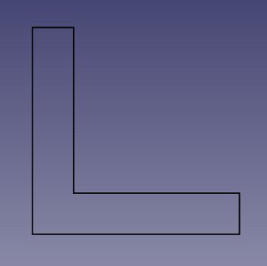
Na numerické klávesnici stiskněte nulu a nasatvíte axonometrický pohled.
Aktivujte pracovní plochu Díl.
Klikněte na nástroj Vysunout.

Na záložce Úkoly vlevo vyberte objekt Drát. Potom zadejte požadovanou délku, třeba 750mm. Směr ponechte na Z. Klikněte na Použít. Nyní bychom měli mít Vysunutý objekt v záložce stromu projektu (Obr. 1.8)

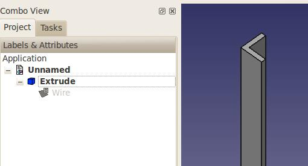
U této metody mám drobné varování ve srovnání s první: pro úpravu tvaru musíte upravit Drát a to není tak jednoduché jako u předešlé metody.
A je ještě několik dalších způsobů jak to udělat! Doufám, že tyto dva příklady Vám pomohou začít. Určitě cestou narazíte na pár zádrhelů (I já jsem narazil, když jsem se učil FreeCAD a to mám zkušenosti s 3D CAD aplikacemi), ale neváhejte se zeptat na FreeCAD fóru!
Označení na tlačítku Vašeho FreeCADu může být jiné v závislosti na verzi a také na tom co jste dělali předtím. Označení tlačítka může být: "top", "front", "side", "None" nebo Vektor reprezentovaný jako d(0.0,0.0,1.0). Také může být prázdný, Například:

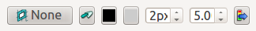

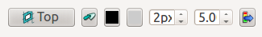

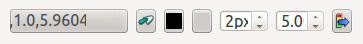
Instrukce uvedené výše budou fungovat bez ohledu na to co je tlačítku.

- Creation and modification: New Sketch, Extrude, Revolve, Mirror, Scale, Fillet, Chamfer, Face From Wires, Ruled Surface, Loft, Sweep, Section, Cross-Sections, 3D Offset, 2D Offset, Thickness, Project on Surface, Appearance per Face
- Boolean: Compound, Explode Compound, Compound Filter, Boolean Operation, Cut, Union, Intersection, Connect Shapes, Embed Shapes, Cutout Shape, Boolean Fragments, Slice Apart, Slice to Compound, Boolean XOR, Check Geometry, Defeaturing
- Other tools: Box Selection, Shape From Mesh, Points From Shape, Convert to Solid, Reverse Shapes, Simple Copy, Transformed Copy, Shape Element Copy, Refine Shape, Set Tolerance, Persistent Section Cut, Attachment
- Preferences: Preferences, Fine tuning
- Getting started
- Installation: Download, Windows, Linux, Mac, Additional components, Docker, AppImage, Ubuntu Snap
- Basics: About FreeCAD, Interface, Mouse navigation, Selection methods, Object name, Preferences, Workbenches, Document structure, Properties, Help FreeCAD, Donate
- Help: Tutorials, Video tutorials
- Workbenches: Std Base, Assembly, BIM, CAM, Draft, FEM, Inspection, Material, Mesh, OpenSCAD, Part, PartDesign, Points, Reverse Engineering, Robot, Sketcher, Spreadsheet, Surface, TechDraw, Test Framework
- Hubs: User hub, Power users hub, Developer hub